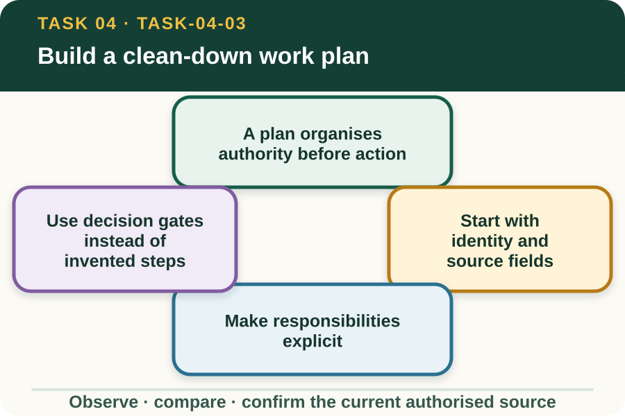

Learning purpose
Sequence a safe, source-controlled clean-down plan without inventing products, settings or procedures.
Task 4 · Lesson 3 of 4
Sequence a safe, source-controlled clean-down plan without inventing products, settings or procedures.
Learning purpose
Sequence a safe, source-controlled clean-down plan without inventing products, settings or procedures.
Success criteria
Learning boundary
Supplementary learning and formative practice only. Current RTO assessment, local procedures and authorised supervision control real work.

A clean-down work plan should make the task identity, purpose, responsibilities, controlling procedure and unresolved decisions visible. It is a coordination document, not permission to begin work.
This module teaches planning fields and decision gates only. It deliberately does not specify a product, PPE item, cleaning location, equipment setting, waste method or cleaning step.
The plan needs the item or equipment identity, previous work context, intended destination and current property procedure. These fields help the supervisor match the task to the exact source rather than a generic biosecurity example.
Record source title, version or location as the workplace requires. If the applicable procedure cannot be confirmed safely, the plan remains at a hold point.
A controlled plan identifies who authorises the work, who carries out each permitted role, who supervises, who receives reports and who records the final status. A learner should not be assigned a role beyond their training or permission.
Responsibilities also include communication at handovers. People need to know when the item is awaiting action, when a concern has been referred and which authorised person controls any change.
A decision gate states what must be confirmed before the plan can progress: current procedure identified, work area authorised, safety status confirmed, required resources approved, observed concerns referred and completion status decided by the nominated person.
The gate does not say how to perform the controlled action. That detail belongs in the current local procedure and supervised demonstration, which can change with the item, property and threat context.
Fictional worked example
Observed evidence: A fictional planning card names a support vehicle and destination but leaves the controlling biosecurity procedure and authorised location blank. Decision and reason: The task cannot progress because two property-specific controls are unknown. Safe action: The learner marks both fields 'confirmation required' and sends a concise query to the supervisor. Result: The supervisor points to the current procedure and nominates the approved work location. Next check or record: The learner updates the source and location fields but does not add cleaning steps from memory.
A work plan should anticipate that inspection may reveal damage, inaccessible areas, unexpected material or a source conflict. It needs an escalation field so the team does not improvise when evidence falls outside the confirmed plan.
Weather, adjacent work and access changes can also invalidate planning assumptions. Record the changed fact and obtain a revised authorised decision before the task progresses.
Recording that an activity occurred is different from confirming that the item meets the property's release criteria. The authorised person applies the current procedure and evidence to make that decision.
A learner can record their permitted role, observations and referrals. They must not mark an item clear, clean or released unless the current workplace process explicitly assigns and confirms that authority.
Formative practice
Each option explains the consequence. These answers save only on this device.
Written application
Apply and keep a learning record
Review a fictional planning card and highlight missing identity, source, role, location, escalation and authority fields. Do not fill any practical step from memory or another property.
Learning record: A supplementary-learning planning-field audit and a list of questions for the authorised supervisor.
Lesson responses and the activity are formative learning only. Formal sufficiency and competence remain with the current RTO process.
Source basis: AHCBIO203 Release 1 preparation, supervisor-confirmation, workplace-procedure and reporting requirements. Exact tools, products, PPE, infection controls, locations, cleaning and waste procedures remain controlled local content.